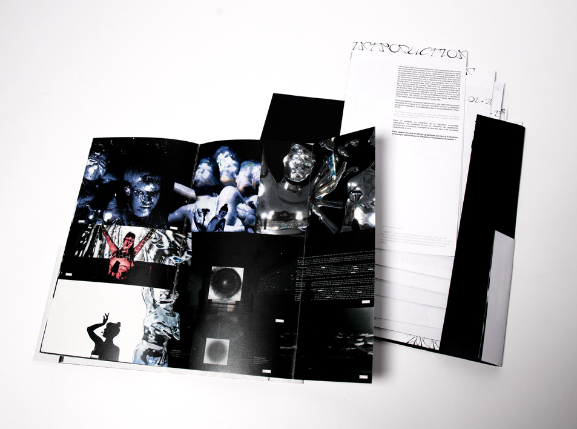

VISIONS SONORES
through my thesis, I examine the connection between the electronic music scene and graphic design.
i study the role of visuals in electronic music, particularly through audiovisual performances, which oscillate between dialogue and transcription.
how does the embodiment of electronic music through graphic design influence the audience’s experience?

